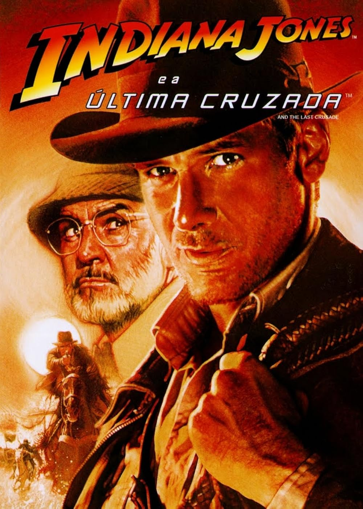

[FILME]
Indiana Jones e a Ultima Cruzada
1989 • 2h 07min • Ação/Aventura
8.2
/ 10
Indiana Jones parte em uma aventura para encontrar seu pai e impedir que o Santo Graal caia nas mãos dos nazistas.
Direção: Steven Spielberg
Elenco: Harrison Ford, Sean Connery, Denholm Elliott e Alison Doody
Nossa crítica
/////
Veredito
/////////
8.2
de 10